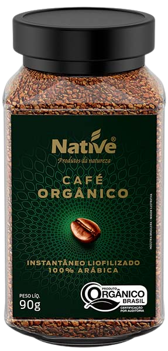

Você sabe o que é um café “100% arábica”?
Quem acompanha o mundo do café de qualidade está acostumado a ver nas embalagens a inscrição “100% arábica”. Café bom que se preze precisa ser assim, os nossos blends Café Cultura também se encaixam nesta classificação. Mas você saberia dizer porquê o café arábica tem qualidade melhor que o robusta? Se você está perdido, vamos fazer uma rápida explicação entre os tipos de grãos. O arábica foi catalogado em 1753, é naturalmente doce, possui aroma forte, gera uma bebida ligeiramente ácida e corresponde a 75% da produção mundial. Já o robusta foi catalogado no fim de 1800, tende a ter um sabor mais fraco, com menos acidez, floresce diversas vezes ao ano (ao contrário do arábica) e corresponde a 25% da produção de café mundial.
R$ 4,99kg
Capulus
100% Arábica
GRÃOS SELECIONADOS E 100% ORGÂNICOS
CAFÉ ORGÂNICO INSTANTÂNEO LIOFILIZADO